早期発見・早期治療が大切です
～虫歯・根管治療～
「歯が痛い」「歯がしみる」といった症状は虫歯が原因かもしれません。しかも、このような自覚症状に気づいたときには、すでに、ある程度虫歯が進行してしまっている証拠です。そのまま放置をしても自然には治りませんので、お早めに三島駅・下土狩駅から近い歯医者「MI総合歯科クリニック」にご相談ください。当院ではできるだけ痛みを小さく抑える「無痛治療」にも積極的に取り組み、患者様への負担の少ない虫歯治療や根管治療をご提供します。
虫歯の進行と症状、おもな治療
※表は左右にスクロールして確認することができます。
|
CO 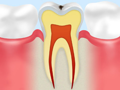 |
C1 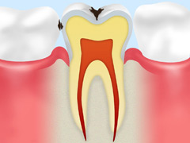 |
C2 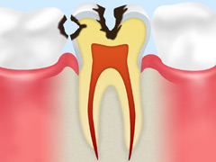 |
C3 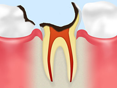 |
C4 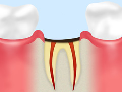 |
|
症状 ごく初期段階の虫歯です。虫歯菌が出す「酸」によって、歯の表面のエナメル質の成分が溶かされはじめた状態です。 〈自覚症状〉
|
症状 エナメル質がさらに溶かされた状態です。 〈自覚症状〉
|
症状 虫歯菌がエナメル質の奥の象牙質にまで進行した状態です。 〈自覚症状〉
|
症状 虫歯菌が歯の中の神経にまで達した状態です。 〈自覚症状〉
|
症状 虫歯菌によって歯のほとんどが溶かされた状態です。 〈自覚症状〉
|
|
治療法 ブラッシングで汚れをしっかり落とせば自然治癒の可能性がある時期です。フッ素塗布より浸透度の高いフッ素イオン導入で歯の再石灰化を促します。また、ストリークレーザーを用いることで脱灰を起こしにくい歯にいたします。 |
治療法 う蝕を予防するため、奥歯と前歯の溝にプラスチックを詰めるシーラントを実施。また、最新設備であるストリークレーザーを用いて脱灰を防ぎ、歯の資質強化を促す処置も行います。 |
治療法 ストリークレーザーを用いて、虫歯部分の毒素を的確に殺菌を行います。また、脱灰を防ぐことで歯質強化いたします。また、ダイレクトボンディングを行うことで健康な歯をなるべく削らずに修復します。 |
治療法 根管（こんかん）治療を行い、虫歯菌に汚染された神経を取り除きます。そのあと、被せ物を装着して歯の機能回復をはかります。 |
治療法 ほとんどの場合、抜歯が選択され、そのあとでインプラント治療や入れ歯治療またはブリッジ治療を行って歯の機能回復をはかります。 |
重度の虫歯は根管治療で抜歯を回避
C3段階にまで達した重度の虫歯は、そのままでは抜歯を余儀なくされます。
抜歯をすると歯並びが乱れ、口腔内だけでなく全身のバランスにも悪影響をおよぼすリスクを負います。
お口まわりや全身の健康をおびやかさないように、抜歯を避けるために行うのが「根管治療」です。
根管治療とは、虫歯菌に汚染された歯の中の神経を除去し、神経が入っていた細い管「根管」の中を洗浄・消毒してからすき間なく薬剤で埋めて密閉する処置です。
その上に、支台を立て、被せ物を装着して歯の機能を補います。
根管治療は精密さが要求されます。それは根管の中に少しでも細菌を残してしまうと再発してしまい、歯を失うことに近づいてしまうからです。
当院ではレーザー治療を含む精度の高い根管治療にも対応します。
根管治療の手順
|
STEP1 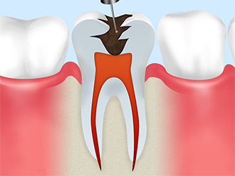 虫歯菌に汚染された神経や血管を根管内から取り除きます。 |
STEP2 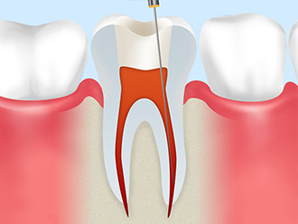 専用器具を使って根管の深さを正確に測定します。 |
STEP3 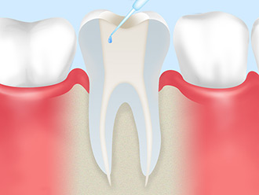 根管内部を徹底的に洗浄・除菌します。 |
|
STEP4 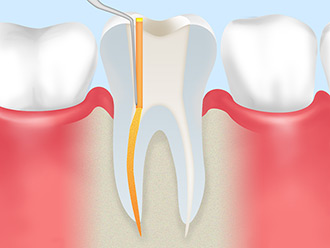 根管内部に薬剤を充填し、細菌感染を防ぐために密閉します。 |
STEP5 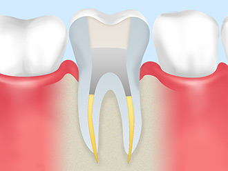 被せ物を装着する土台をつくります。 |
STEP6 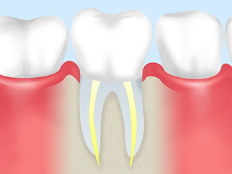 土台に被せ物を装着して治療完了です。 |
歯がしみるのは知覚過敏かもしれません
「冷たい物や甘い物を口にすると歯がしみる」「ブラッシングのときにキーンとした痛みがある」のは虫歯の自覚症状と同じですが、知覚過敏も疑われます。どちらの場合でもご来院いただければ、原因を追究し取り除く治療を行いますので、お早めにご相談ください。
知覚過敏の原因と解決方法
知覚過敏の原因と解決方法
知覚過敏は、小さな刺激に敏感に反応してしまい、「痛み」を感じる症状です。季節や気候の変化、ストレスなどによって引き起こされるといわれていて、ほかにも強いブラッシングによって歯の表面のエナメル質が削られてしまったことが原因の場合もあります。対策としての基本は毎日のブラッシングで汚れを落とすことです。さらに「知覚過敏用の歯みがき粉を使用する」または「フッ素塗布などによって歯の再石灰化を促す」などで治癒を待つ方法が一般的です。
PICKUPMI総合歯科クリニックの痛みを抑えた治療への取り組み
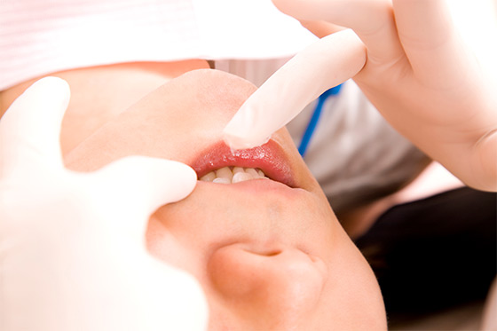
歯科治療に「痛い」イメージがありませんか？ 当院では、できるだけ患者様の負担を軽減するために、できるだけ痛みを抑えた「無痛治療」への取り組みを行っております。治療中に痛みを感じないように麻酔をしますが、その注射が苦手な方もいらっしゃいます。その注射の痛みをできるだけ抑えるように、表面麻酔を塗り、細い注射針を使い、麻酔液をゆっくり一定の圧力で注入します。患者様に合わせた麻酔方法をご提案しますので、「痛み」が不安な方もお気軽にご相談ください。
レーザーを用いることで知覚過敏を解消
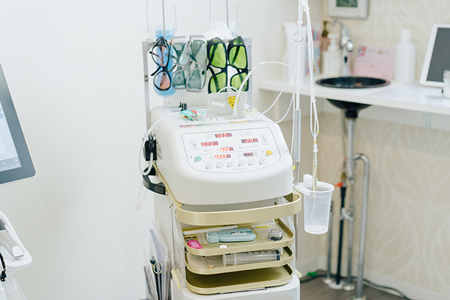
レーザーを用いることで知覚過敏を解消
知覚過敏は、ストリークレーザーの照射によって解消できる可能性があります。ストリークレーザーには資質を強化し、象牙質を守ってくれる働きが期待出来るため、もしも知覚過敏に悩まされているようなら、レーザー治療を検討してみてください。
料金表
インレー |
セラミックスインレー 50,000円 |
ジルコニアインレー 50,000円 |
|---|
クラウン |
オールセラミックスクラウン 100,000円 |
オールジルコニアクラウン 100,000円 |
|---|
そのほか |
ラミネートベニア（前歯に貼るセラミックス） 100,000円 |
ファイバーコア（土台） 15,000円 |
|---|
処置 |
唾液検査（虫歯リスク検査） 3,000円 |
エアフロー
|
|---|
※すべて税抜き価格表示です